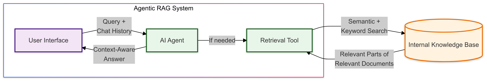
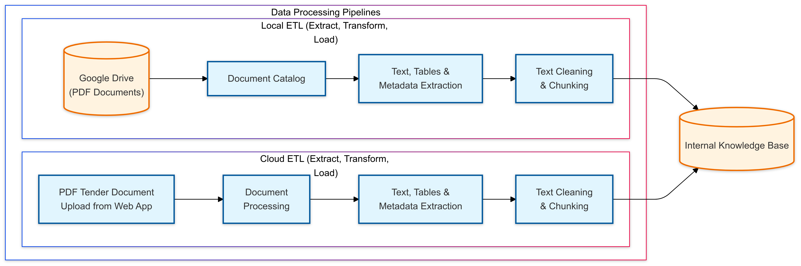

×

PROFESSIONAL PROJECTS
-
2024 - AI-Powered Web-based Platform for Energy-Efficient
Renovations and Renewable Energy Consulting
Overview: Developed a comprehensive web-based platform providing intelligent support for energy-efficient renovation and renewable energy consulting. The system combines a modern web application with advanced AI technology and sophisticated data processing capabilities.
-
Key Components:
- Modern web application with responsive design and intuitive user interface
- Advanced AI consulting system using LangGraph/LangChain for intelligent conversations
- Sophisticated ETL pipelines for processing documentation and funding programs
- Cloud-native architecture leveraging Google Cloud Platform
-
Technical Highlights:
- Frontend: React
- Backend: FastAPI with Firebase/Firestore integration
- AI Infrastructure: Custom LangGraph workflow with vector database (Weaviate)
- Data Processing: Specialized ETL pipelines using Unstructured.io, Prefect and GCP Workflows
- Technology Stack: Google Cloud Platform (Cloud Run, Cloud Storage, Secret Manager, Cloud Workflows, Cloud Functions, Pub/Sub, EventArc), Firebase, Firestore, Python/ FastAPI, React, LangChain ecosystem, Weaviate, Unstructured.io, OpenAI/Anthropic/Google LLM models integration
- Platform Overview | Mobile Version
- Link to web
Web Application Screenshots:


System Architecture Flowcharts:
  -
Key Components:
PERSONAL PROJECTS
Projects
- 2024 - Chatbot RAG Demo is fastAPI backend designed for a web-based chat application that provides interactive and intelligent chat experiences in streaming mode. Leveraging technologies like Firebase Authentication, Firestore, Websockets, Large Language Models (LLMs)/ ChatGPT and RAG with LLamaIndex. The chatbot engages users in discussions about an AI-generated sci-fi novel, titled "Beyond Boundaries: A Journey Through Future's Veil," exploring potential futures. Try the demo on my company website.
- 2023-2024 - Educational Assistant App Study Buddy employs Flutter and Flask/Python to craft an interactive and educational application tailored for children, accessible on both mobile and web platforms. The app boasts advanced AI capabilities through its integration with the OpenAI API, facilitating interactive Q&A sessions.
- Functionality: Integrates advanced AI capabilities using OpenAI API for interactive Q&A sessions. Features include user-friendly design, multilingual support, and various user roles (Admin, Subscriber, Guest).
- Technical Highlights: Backend built with Flask/Python, integrated with Firebase, Google Vision, and GCP Storage. Frontend developed in Flutter, ensuring a seamless cross-platform experience.
- Key Features: Interactive learning tools, efficient app navigation, real-time educational support, and a secure, modular backend structure for efficient data processing and storage.
- Technology Stack: Employs technologies like Google Cloud Platform, Firebase Authentication, Firestore, OpenAI API, and ChromaDB, showcasing a diverse and powerful set of skills in app development.
- More Details
- 2024 - Machine learning manual based on Kaggles Titanik dataset. Offers a structured methodology for ML challenges, improving prediction accuracy and providing insights into the Titanic survival data. Ideal for those looking to enhance their data science skills through practical application. More Details
- 2023 - Flutter application interfacing with OpenAI API models including GPT Chat, Whisper, and Dall-E, selection of operational modes, models, etc. More Details
- 2019 - Robotic arm management system utilizing Raspberry PI, incorporating a Python-based GUI for command and PI, incorporating a Python-based GUI for command and control. More Details
- 2020 - 2021 Home Automation: leveraging the ComfortClick server and a mobile application for integrated security (DSC) and adaptive heating solutions via KNX (actuators) and RS485/Modbus (sensors).
- 2020 - Raspberry PI-powered webserver dedicated to data acquisition and visualization of environmental parameters (temperature, humidity, and PM2.5 and PM 10 particles).
- 2023 - Personal page More Details
- 2024 - Company page More Details